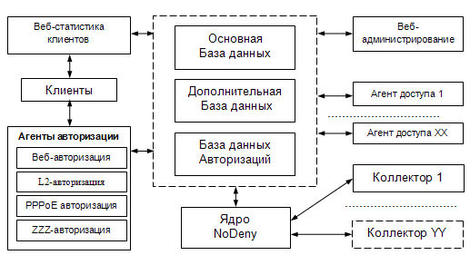
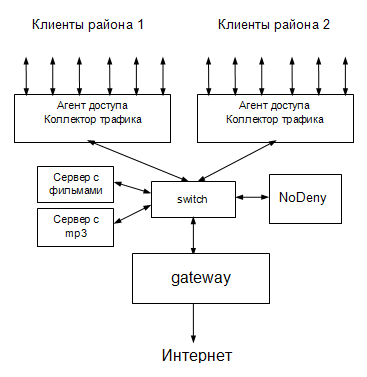
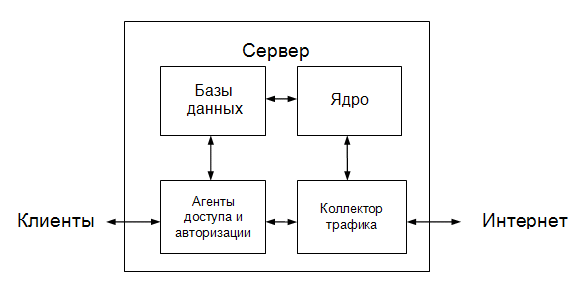

| Биллинговая система NoDeny. Детали системы |
Структурная схема NoDeny:

Центральный узел всей системы - база данных. Взаимодействие всех составляющих системы между собой в большинстве случаев идет через БД, поэтому БД - это наиболее требовательная часть и по надежности и по производительности.
NoDeny модульная система, позволяет разнести узлы на различные, возможно географически удаленные, сервера. Пример построения сети обслуживающей 2 района:

На схеме 2 сателлита: обслуживающий клиентов района 1 и клиентов района 2. Между сателлитами и шлюзом в интернет установлены сервера с контентом. Благодаря такой схеме получаем контролируемый доступ клиентов и в интернет и к локальным ресурсам сети. Более того, если сегментировать сеть vlan-ами, то появляется дополнительная возможность управлять трафиком и между абонентами сети, т.е. разрешать/блокировать, шейпить и считать этот трафик.
В простейшем случае все компоненты NoDeny устанавливаются на один сервер:

Вынос компоненты в отдельный сервер диктуется как географическими размерами сети так и размерами абонентской базы. Логичнее производить управление доступом и авторизацию как можно ближе к клиенту, т.е. в каждом районе организовать свой сателлит обслуживания.
Примеры.
1) Разделение на 2 сервера:
Сервер 1: ядро NoDeny, базы данных, веб-администрирование, клиентская статистика.
Сервер 2: шлюз, коллектор, агенты авторизации и доступа.
2) Разделение на 3 сервера:
Сервер 1: ядро NoDeny, базы данных.
Сервер 2: шлюз, коллектор, агент авторизации и доступа.
Сервер 3: веб-администрирование, клиентская статистика, резервный агент авторизации.
База данных разделена на три составляющие:
1) основная база данных хранит ключевую информацию: список абонентов, платежи, архивы, таблицы топологии, оборудования и др;
2) дополнительная база содержит расширенную статистику трафика, возможно с детализацией до ip, порта и протокола;
3) база авторизации содержит таблицу-очередь авторизаций.
Разделение баз данных на различные сервера может понадобиться в случае регистрации полной детализации трафика при большом количестве абонентов (десятки тысяч).
За основу принята СУБД Mysql.
Назначение модулей
Агенты авторизации предназначены для идентификации клиентов, для гарантии, что в сети с текущими параметрами (например ip-адрес) присутствует легальный абонент. Клиенты авторизации периодически записывают в очередь авторизаций информацию о том, кто и как авторизовался.
Можно применять различные виды авторизаций, при этом комбинировать их. L2-авторизация - один из методов авторизации, разработанный конкретно под систему NoDeny. Предусматривает авторизацию с помощью специальной программы-авторизатора. Преимуществом этой авторизации является: минимальные требования к служебному трафику, поддержка ненадежных каналов (с большим процентом потерь, радиолинки и т.д), надежное шифрование, удобное отображение данных для клиента.
Ядро NoDeny периодически опрашивает коллекторы, снимающие показания о потреблении услуг клиентом (например, трафике), обновляет данные клиента в базе данных, на основании полученных данных из очереди авторизации и других условий (например, баланса клиента) разрешает/запрещает клиенту интернет/доступ к услугам и т.д.
Веб-статистика клиентов предназначена для получения более расширенной информации о состоянии счета клиента, его трафике, истории и т.д.
Веб-администрирование предназначено для администраторов различных уровней и позволяет управлять данными клиентов и системой в целом.
Опыт автора говорит о том, что возможность масштабирования это одно из самых важных свойств, поскольку все показатели (география сети, количество абонентов, трафик) обычно неуклонно растут опережая все ожидания. Для ознакомления с системой вы можете настроить все на одном PC, однако «в боевых условиях» желательно разделить вычислительную часть (ядро, базы данных) и часть управления (управление доступом, авторизацию, коллекторы трафика) на разные сервера. Так при росте сети как географически так и абонентской базы, вы сможете беспроблемно внедрить новый элемент либо разделить имеющийся.
Статистически, автор определил (сам и по данным иных администраторов), что на данный момент, PC-роутер под управлением FreeBSD 6.x (7.x), использующий управление скоростями трафика (шейпами) для каждого абонента, а также ведущий сбор статистики, «переваривает» от 1000 до 1500 абонентов. Кроме количества клиентов, большое значение имеет величина потока трафика, а также количество маршрутизируемых пакетов в единицу времени. Скажем, для сети в 1500 абонентов с 10% анлимитчиков, активно использующих торрент, т.е формирующих наибольшее количество потоков, с средним количеством авторизованных клиентов до 35% в единицу времени, формируется трафик примерно 0,5 Гбита с количеством пакетов до 100 тыс/сек. Это означает, что маршрутизатор должен «переваривать» трафик не менее 1Гбит при 200 тыс пакетов в секунду. Обычно, используя более-менее серверное оборудование, например сетевые карты em, удается получить в 1,5-2 раза большие результаты.
Использование шейпов, в случае их оптимизированной схемы, в частности продуманного использования таблиц фаервола ipfw, снижает производительность обычно незначительно.
Бюджетное решение «все в одном» (ядро, БД, коллектор, авторизация и управление доступом на одном сервере-шлюзе) справится с 1000 абонентов, однако автор рекомендует подумать о разделении NoDeny на составляющие при подходе к цифре 600-800 абонентов. Для начала в отдельный сервер следует выделить ядро с базой данных, остальные составляющие оставить на шлюзе.
Установка системы NoDeny